121GW Open Firmware
User Manual
for the EEVblog 121GW multimeter with the open firmware {{FW_VERSION}}

The open firmware keeps everything you know from the original 121GW and adds a lot. Here is what you get. Click a page number to jump there.
The dial switches the meter on and chooses what you measure. Both ends are OFF. Press MODE to switch between the functions of a position. Each position remembers your last choice, also after switching off.
| Position | Functions (MODE) |
|---|---|
| Low Z | Voltage with low input resistance |
| V | DC → AC → AC+DC volts |
| mV / Temp | DC mV → AC mV → temperature |
| Hz ms % | frequency → pulse width → duty cycle |
| Ω | resistance → continuity → diode → capacitance |
| mVA / VA | power (volts × amps) |
| µA / µVA | small currents (µA) and small power (µVA) |
| A / mA | AC ↔ DC current (the socket you use picks mA or A) |
Each key does one thing when you press it and often another when you hold it for half a second. One beep = done. Two short beeps = not possible right now.
| Key | Press | Hold |
|---|---|---|
| MODE | Next function of the dial position | Backlight on / off |
| RANGE | Fix the range; press again for the next range. Diode: 3 V / 15 V | Back to auto-range |
| HOLD | Freeze the reading → auto-hold → off | – |
| REL | Show the difference to the present reading (REL) on / off | AC: 1 kHz filter on / off. Current: store a zero offset |
| PEAK | AC: catch short peaks on / off | Bluetooth on / off |
| MIN/MAX | Start; then show max → min → average → all | Stop MIN/MAX |
| MEM | Show the last logged readings | Start / stop logging to the SD card |
| SETUP | Next page of the settings (small display) | Change the page shown; hold again to save |
The big digits show the reading. The small display above shows one page of the settings menu: normally the temperature inside the meter, or extra information for what you measure (for example the frequency of an AC voltage). The bar graph (the row of small bars) follows quick changes. AUTO means the meter picks the range (the size of the scale) by itself. Symbols show what is on: AUTO, HOLD, REL, PEAK, MIN MAX AVG, MEM, BT (Bluetooth), 1kHz, Apo (auto power-off), the battery and the lightning symbol for high voltage.
Four AA alkaline batteries (1.5 V). When the battery symbol shows, replace them. Lithium AA cells start with a higher voltage; EEVblog advises using them a little first. Take the batteries out if you store the meter for more than 50 days. A small CR1220 cell inside keeps the clock running.
Turn the dial to a function. The small display shows the firmware version ({{FW_VERSION}}) for a moment, then the meter measures.
After 30 minutes without a key press the meter switches itself off (it beeps five times in its last minute; press any key to keep it on). It never switches off while logging or during MIN/MAX. You can turn this off in the settings: page APOoF.
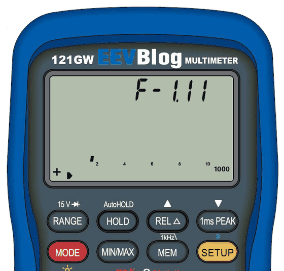
Always: dial first, then MODE for the function, then connect the leads.
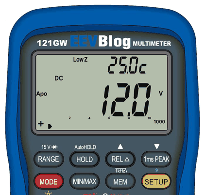
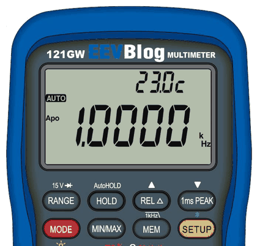
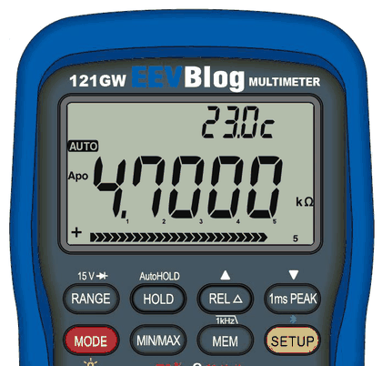
V: up to 600 V, DC, AC or AC+DC. In AC the small display shows the frequency and, one page further, the level in dBm. mV: small voltages up to 500 mV. Low Z: makes "ghost" voltages from nearby wires disappear; it chooses AC or DC itself (dashes while it decides). Not for voltages below about 12 V.
Dial to mV / Temp, press MODE twice, connect the thermocouple. K type is the default; other types . °C or °F: first settings page.
Dial to Hz ms %; MODE steps through Hz, ms and %.
Put the red lead in µA/mA (small currents) or A (up to 10 A) first. On A / mA the meter sees which socket you use. MODE switches AC and DC.
Burden voltage (the voltage the meter itself drops): on the small display page bdOFF switch it to bdOn and connect a lead from the current socket you use to V Ω. This choice is forgotten when you switch off.
Measures voltage (V Ω socket) and current (mA or A socket) at the same time and shows the power, volts × amps. The small display shows the voltage or the current. Dashes until the first result.
RANGE fixes the range, each press goes one range up; hold it to go back to AUTO. OFL means the input is too big for the range.
Hold MEM and HOLD together: logging starts or stops, and HOLD, MIN/MAX and REL are switched off.
Press HOLD: the reading freezes. Press again: auto-hold (A-HOLD). It waits until the reading is steady, keeps it with a beep and takes the next one when you measure again. In volts and amps it ignores readings near zero, so it waits while the probes are in the air. In resistance and diode it ignores open probes, and a short (0) counts. Press again: off.
In Hz, ms, %, capacitance and during MIN/MAX the second press switches HOLD off.
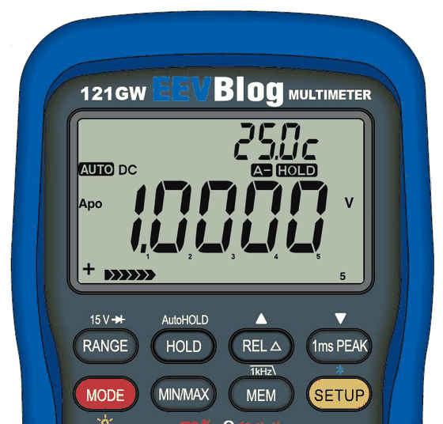
Press REL: the meter remembers the present reading and shows the difference to it. Press again: off. Example: measure a 100 Ω reference, press REL, then each other resistor shows how much it differs. Want it in percent?
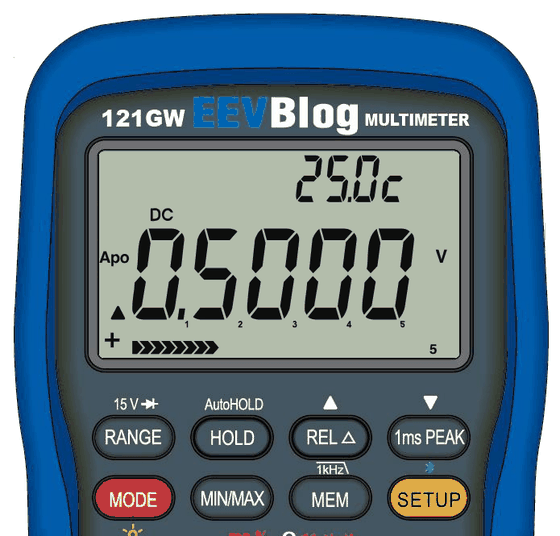
Press MIN/MAX to start. Each press shows: maximum, minimum, average, all three. Hold MIN/MAX to stop. While it runs you also get statistics .
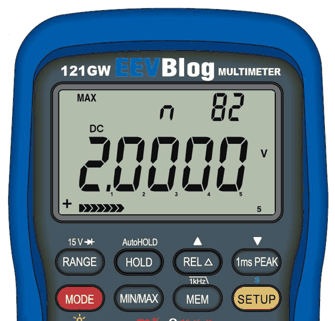
In AC volts and AC mV: PEAK catches short peaks (1 ms). Hold REL to switch the 1 kHz filter on or off; it lets through only frequencies below about 1 kHz. PEAK and the filter can't be on at the same time.
Hold MODE. The meter remembers your choice. To let it switch off by itself .
In a current function on its lowest range, with nothing connected, hold REL. The small value shown is stored as the zero and subtracted from then on, also after switching off.
Each feature in a few steps. "Settings page" means the small display: press SETUP until the page shows, hold SETUP to change it (it blinks), REL / PEAK to choose, hold SETUP to save.
Where: any function · settings pages Lo, HI, Lt
Check many parts quickly: the meter says PASS, HI (too high) or Lo (too low).
Both limits must be taken in the same function and range (if Lo is above HI, the meter swaps them). While the test runs the range stays fixed. Turning the dial or changing the function ends it. The limits are forgotten when you switch off.
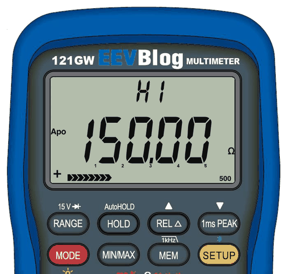
Where: any function · settings page rEL
Shows how far a part is from a reference, in percent. Great for checking tolerances.
Logging and Bluetooth still use the normal value.
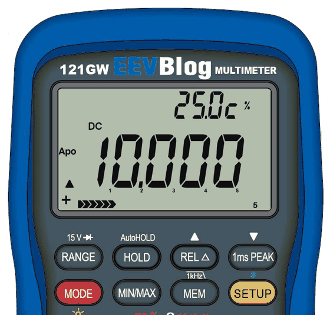
Where: while MIN/MAX runs · settings pages n, Sd, tHI, tLo
Start MIN/MAX, then press SETUP to the new pages:
Log files also get the time of the max and min at the end.
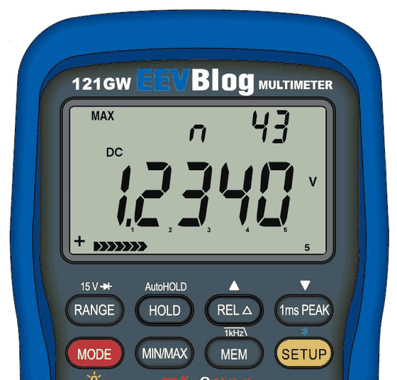
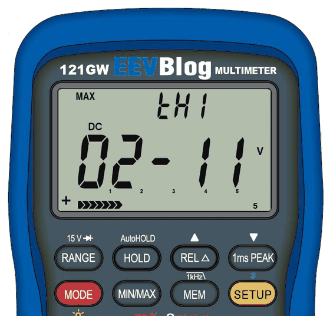
Where: dial V, AC · the dBm page of the small display
In AC volts press SETUP until the level in dB shows. Hold SETUP to choose the reference: r 600 (600 Ω), r 50 (50 Ω), r 75 (75 Ω) or r dbV (dB compared with 1 V). Hold SETUP to save.
Example: 1.000 V AC is 2.218 dBm at 600 Ω.
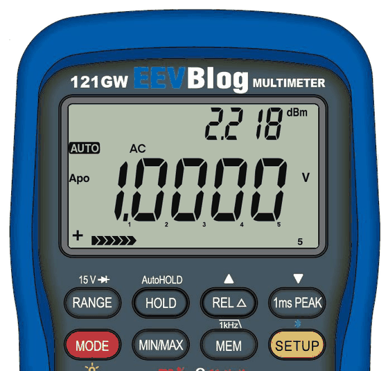
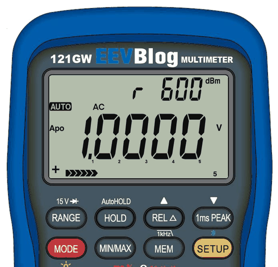
Where: temperature · settings page tc
Choose the type printed on your thermocouple. A wrong type gives a wrong temperature (a J sensor at 100 °C reads about 122 °C on the K setting).
| Type | Range |
|---|---|
| K (default) | −200 to 1350 °C |
| J | −200 to 936 °C |
| T | −200 to 400 °C |
| N | −200 to 1300 °C |
| R, S | −50 to 1760 °C |
Outside the range the meter shows OFL.
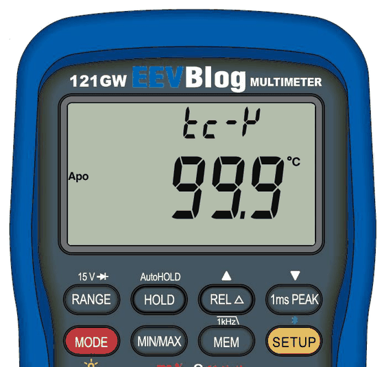
Where: resistance · settings page Pt
Connect a PT100 or PT1000 sensor and read the temperature directly.
Range −200 to 850 °C. Logging and Bluetooth still record the resistance.
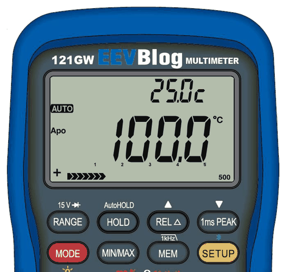
Where: dial A / mA, DC mA (lead in the mA socket) · settings page LP
Shows a loop current as a percentage: 4 mA = 0 %, 12 mA = 50 %, 20 mA = 100 %. A broken loop (0 mA) shows −25 %. Choose L4-20, or L0-20 for 0 mA = 0 % and 20 mA = 100 %, and save. Logging and Bluetooth still record the current.
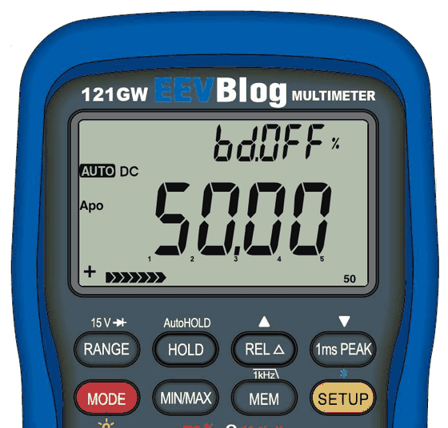
Where: dial Ω, continuity · threshold page and page bH
Threshold: DN = beep below the value (finding connections), UP = beep above the value (finding broken wires). Values 1, 5, 10, 30, 50, 100, 200 and 300 Ω. Default DN 30.
Beep hold (bH): how long the beep lasts after a very short contact, so you hear even a quick touch: 100, 50 or 25 ms, or bHOFF (shortest, about 15 ms).
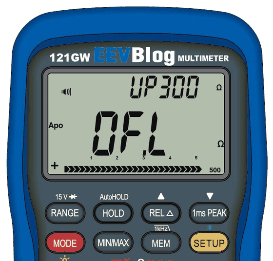
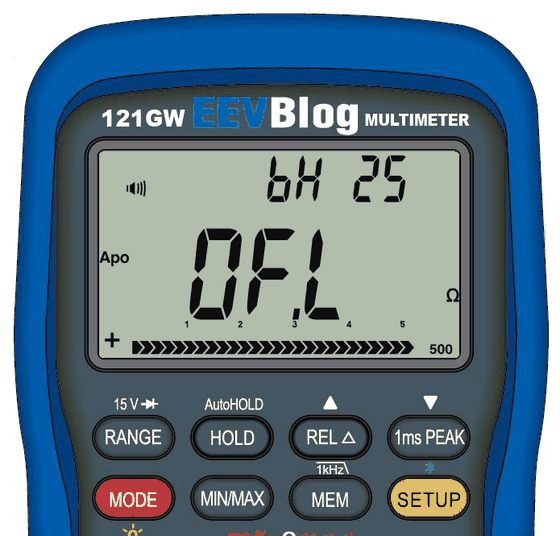
Where: any function · settings page dSP
dSP 1 = calm, steady digits (as the original). dSP 2 = the digits follow changes about four times faster, for adjusting things or watching a value move. Hz, ms and % are not affected.
Where: settings page bL
The light switches itself off after the time you choose: bL30S (30 seconds) or bL 1 to bL 99 (minutes). bLOFF = no timer (default). Any key or dial turn switches the light back on; that key press only wakes the light and does nothing else.
Where: settings page bt
How many readings per second go out: 2 (as the original), 4, 10 or 20. Use 10 or 20 for live graphs, 2 to save battery.
Where: settings page CL
CL 12 shows the time as 1–12 (14:30 shows as 2-30; there is no AM/PM mark). Log files and Bluetooth keep 24-hour time.
Where: settings pages tr and Ch
With interval 0 the meter logs only on the trigger. With a longer interval it also logs at every interval (with tr-Lt only while the result is not PASS).
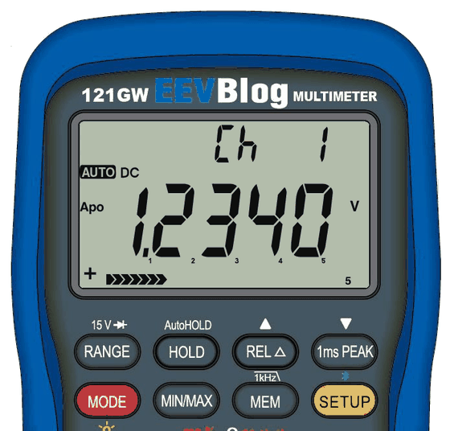
Where: settings page BAT
The low-battery symbol comes at 4.1 V. Some meters read the battery a few percent high or low. To correct it, hold SETUP on this page: bA and the voltage blink, REL / PEAK change it in small steps (up to ±10 %), hold SETUP to save.
With the buzzer off (settings page b-OFF) the key beeps and info beeps are silent. The continuity beep and the safety warnings (wrong socket, high voltage) still sound.
The display updates more often than with the original firmware. In tests: currents, continuity and diode every 0.1 s, DC volts twice as often as before, and the first reading about half a second after switching on.
The meter reads and writes cards formatted as FAT32 (usual for cards up to 32 GB) and exFAT (usual for larger cards), with long file names. With the two-part bootloader () you can also format the card on the meter (it becomes exFAT):
Or from the computer: with the meter on page Ld-bt, the Companion's CARD view has Format card. Type FORMAT to confirm; a window stays open until the meter is done.
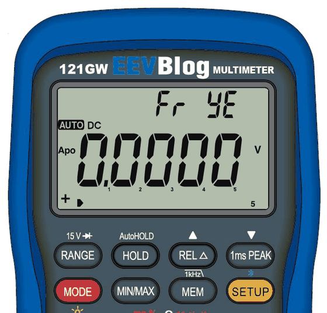
Where: settings page Ld-bt, with the Companion app
With Bluetooth on and the page Ld-bt shown, the Companion app can send new firmware to the meter, list, download and delete the files on the SD card, and read and change most settings. Readings pause while the app uses the card. During a firmware transfer the meter shows the progress in percent (Ld 42) and Ld oK when done. Logging must be off. Speed: about 1 KB per second, so a firmware file takes about 2½ minutes.
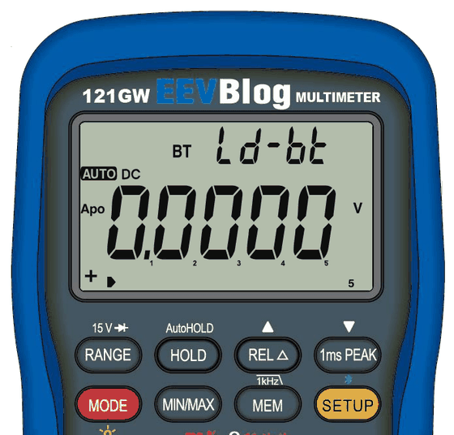
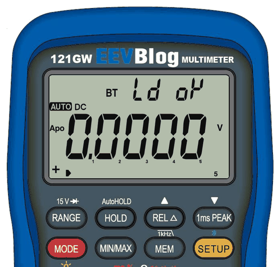
A calibration backup (cal.bin) can only be restored into the meter it came from. Another meter's file is refused and nothing changes. Holding MEM a bit too long while switching on no longer starts logging instead of the backup menu.
All settings live on the small display. Press SETUP to go to the next page; the pages go round in a circle.
Date and time are saved in two steps: on the month-day page the month blinks first; hold SETUP, then the day blinks; hold SETUP again. The same for hour and minute. Serial number: a short SETUP moves to the next digit, REL / PEAK change it, hold SETUP to save.
Pages that only fit some functions (for example the thermocouple type) show only there. Saved settings stay after switching off. A page left blinking for about two minutes goes back to its saved value. The menu is locked while logging and while you look at stored readings.

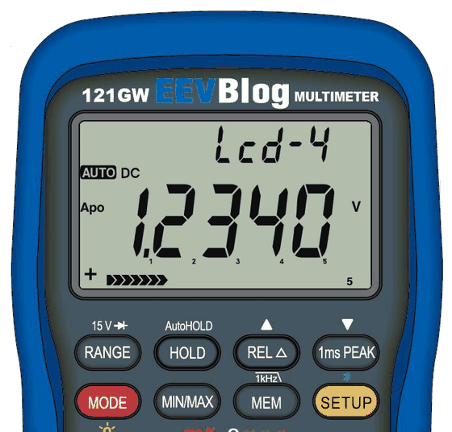


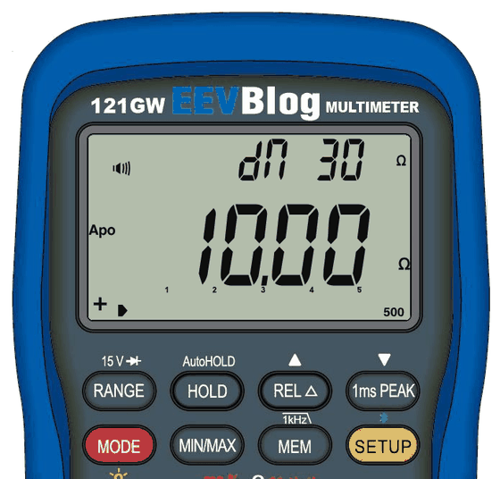
During logging most keys are locked so nothing changes by accident; backlight and Bluetooth still work. With low batteries logging won't start or stops (LoBAt).

Each recording is a file named after the date, for example 26110500.csv (2026-11-05, recording 00). Open it in any spreadsheet: date, time, function, value and unit on each line, and at the end the maximum and minimum with the time they happened. A file holds up to 600 000 lines; then logging stops by itself (SdEnd).
Press MEM: the last logged readings (up to 60). REL = next, PEAK = previous, MEM = back. It closes by itself after about 10 seconds.
Use a micro SD card formatted as FAT32 or exFAT. Note: EEVblog's original bootloader can only read FAT32 cards for firmware updates.
Hold PEAK to switch Bluetooth on (BT symbol); hold again to switch off. The meter keeps measuring and sends its readings. Only one device at a time: close the phone app before using the computer app.
The 121GW Companion is an app for Windows, macOS and Linux (download it from the project's releases page; free for individuals, schools and non-profits). It can:
Your meter's calibration, serial number and settings live inside the meter. Keep a backup on the SD card and on your computer, in case something ever goes wrong.
The card now has the file cal.bin: your meter's calibration, serial number and settings. Copy it to your computer and keep it safe. -Err- means it didn't work (card missing or faulty). Too slow? The meter just starts normally; switch off and try again.


The same, but press PEAK instead of REL (SdSEt), then MODE. Only the backup of this meter is accepted; anything else shows -Err- and nothing changes.
The serial number is a settings page. The backup is tied to it: don't change the serial number, or make a new backup right after.
Updates keep your calibration, serial number and settings. Still: make a backup first and use fresh batteries.
Which bootloader do you have? (The bootloader is the small program that installs firmware.) If the settings menu has the page Fr no after Ld-bt, you have the two-part bootloader; otherwise EEVblog's original.
Bluetooth on, settings page Ld-bt. When the app offers an update, click it. The firmware goes to the card (Ld 42 … Ld oK).
With the two-part bootloader the app then restarts the meter and installs it; you don't press anything. With EEVblog's bootloader you finish with the card steps below.
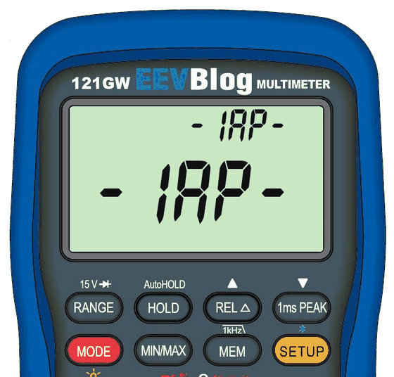
An optional replacement for EEVblog's bootloader. With it, updates go over Bluetooth without card or keys, exFAT cards work, and you can format the card on the meter. It never touches your calibration. The Companion app installs it once (fresh batteries needed, at least 4.8 V). More in the bootloader guide on the project page.
| Problem | Solution |
|---|---|
| A key does nothing, two short beeps | Not possible right now, e.g. during logging. Stop logging first. |
| No SdCAL, or MODE does nothing after SdSAv | Hold MEM while switching on, then press each next key within 5 seconds. |
| Bluetooth won't connect | Hold PEAK until BT shows. Close the phone app: only one device at a time. |
| The range keeps jumping | Press RANGE to fix the range. |
| Faint display or ghost segments | Change the contrast (page Lcd). |
| The light goes off by itself | Page bL: bLOFF. |
| The meter switches itself off | Page APOoF. |
| Card update does nothing (EEVblog's bootloader) | Card must be FAT32, file EEVBlog.bin in the top folder. |
| -IAP- stays after an interrupted update | Send the firmware again with the app or use a card. |
| Display blank after a bootloader update | Take the batteries out and put them back. |
The accuracy of each range is in EEVblog's original 121GW manual; the firmware doesn't change the hardware.